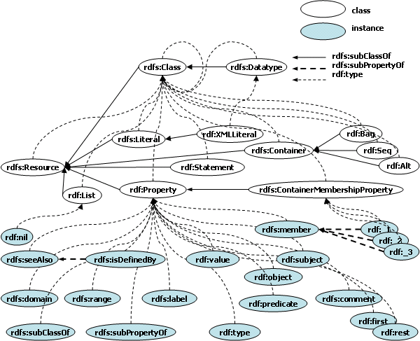
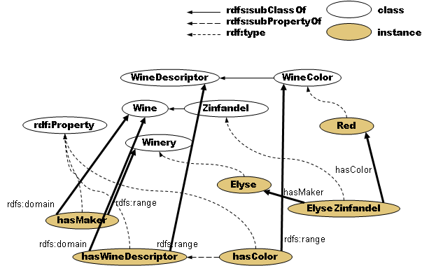

5. RDFS Vocabularies and Semantics
The RDF ontology description language, RDF Schema (RDFS),
is a semantic extension of RDF. It provides a device to describe groups of same kind
resources (classes) and the inclusiveness among these groups. RDFS provides the
minimal set for describing concepts for ontology. The vocabulary contains
rdfs:Resource and rdfs:Class, which provide the classification notion together with the property rdf:type,
and the subsumption notion of classification with the property rdfs:subClassOf. These semantics of RDFS
is similar to the CLOS perspective, namely rdf:type to instance-class relation and rdfs:subClassOf to
subclass-superclass relation. Therefore, RDFS classes are mapped onto CLOS classes and RDFS instances
are mapped onto CLOS instances in SWCLOS.
5.1 Resource Classes, Metaclasses, and Instances
Figure 5.1 shows the relationship in RDF(S) vocabulary. A broken curved line stands for rdf:type relation,
and a solid straight line stands for rdfs:subClassOf relation. rdfs:Resource is a superclass of all other classes,
and rdfs:Class is a class of all classes, including rdfs:Class itself. A class of classes is called metaclass in
CLOS. So, rdfs:Class and rdfs:Datatype in RDFS vocabulary are metaclasses in CLOS.

Figure 5.1 RDFS Hierarchy Graph
The notion of metaclass, class, and instance is very important in CLOS. Therefore, predicates for these
categories on RDF resources are prepared. See the followings.
gx-user(33): (rsc-object-p rdfs:Class)
t
gx-user(34): (rsc-object-p rdfs:Resource)
t
gx-user(35): (rsc-object-p rdf:Property)
t
gx-user(36): (rsc-object-p rdfs:comment)
t
gx-user(37): (rsc-object-p "This is a comment.")
common-lisp:nil
gx-user(38): (rsc-object-p "This is also a comment."@en)
common-lisp:nil
gx-user(39): (rsc-object-p "1"^^xsd:nonNegativeInteger)
t
gx-user(40): (rsc-object-p 1)
common-lisp:nil
gx-user(41): (rsc-object-p <Foo>)
common-lisp:nil
gx-user(42): (rsc-object-p <<Foo>>)
t
gx-user(43): (rdf-class-p rdfs:Class)
t
gx-user(44): (rdf-class-p rdfs:Resource)
t
gx-user(45): (rdf-class-p rdf:Property)
t
gx-user(46): (rdf-class-p rdfs:comment)
common-lisp:nil
gx-user(47): (rdf-metaclass-p rdfs:Class)
t
gx-user(48): (rdf-metaclass-p rdfs:Resource)
common-lisp:nil
gx-user(48): (rdf-instance-p rdf:Property)
common-lisp:nil
gx-user(49): (rdf-instance-p rdfs:comment)
t
gx-user(50): (rdf-class-p rdf:List)
t
gx-user(51): (rdf-instance-p rdf:nil)
t
| rsc-object-p x |
[Function] |
| returns true,
if x is not a literal but an resource object in RDF. Actually, this function returns
true, if x is an instance of rdfs:Resource in CLOS. This is same as (cl:typep x rdfs:Resource),
but more efficient a little bit.
|
| rdf-class-p thing |
[Function] |
| returns
true,
if thing is a class of resource in RDF. Actually, this function returns true, if thing
is rdfs:Class or an instance of rdfs:Class in CLOS. |
| rdf-metaclass-p thing |
[Function] |
| returns
true,
if thing is a metaclass of resource. Actually, this function returns true, if
thing is rdfs:Class or an instance and simultaneously subclass of rdfs:Class in CLOS. |
| strict-class-p thing |
[Function] |
| returns
true,
if thing is a class but not a metaclass of resource. |
| rdf-instance-p thing |
[Function] |
| returns
true,
if thing is an instance of rdfs:Resource but not an instance of rdfs:Class. |
| resource? symbol |
[Function] |
| returns
true,
if symbol is a symbol and its value is a resource. |
| returns
true,
if symbol is a symbol and its value is a class of resource. |
| metaclass? symbol |
[Function] |
| returns
true,
if symbol is a symbol and its value is a meta class of resource. |
| strict-class? symbol |
[Function] |
| returns
true,
if symbol is a symbol and its value is a class but not a metaclass of resource. |
| instance? symbol |
[Function] |
| returns
true,
if symbol is a symbol and its value is an instance of resource. |
5.2 rdf:type and rdfs:subClassOf
Figure 5.1 depicts class-instance relations described with rdf:type property. Class-subclass relations are
described with rdfs:subClassOf property, and property-subproperty relations are described with
rdfs:subPropertyOf in RDFS vocabulary.
To get rdf:type property value of resources, you may use gx:type-of and
cl:class-of function. Note that
gx:type-of is customized type-of function for resources instead of cl:type-of so that it brings RDFS
semantics, but cl:class-of is a native function in CLOS. Therefore, while gx:type-of for rdfs:Class returns
rdfs:Class in RDFS semantics, cl:class-of for rdfs:Class returns actual metaclass object of rdfs:Class in
CLOS as shown below.
gx-user(10): (type-of 1)
xsd:byte
gx-user(11): (type-of "1"^^xsd:integer)
xsd:integer
gx-user(14): (type-of rdf:Property)
rdfs:Class
gx-user(15): (class-of rdf:Property)
#<_rdfsClass rdfs:Class>
gx-user(16): (type-of rdfs:comment)
rdf:Property
gx-user(17): (class-of rdfs:comment)
#<rdfs:Class rdf:Property>
gx-user(18): (type-of rdfs:Datatype)
rdfs:Class
gx-user(19): (class-of rdfs:Datatype)
#<_rdfsClass rdfs:Class>
gx-user(20): (type-of rdfs:Class)
rdfs:Class
gx-user(21): (class-of rdfs:Class)
#<metaRDFSclass _rdfsClass>
| type-of resource |
[Function] |
| returns the name of the class of resource. This function is almost same as cl:type-of, but
exactly obeys RDFS semantics. The return value for rdfs:Class object is the name of itself.
|
To get instances of a class, the function collect-direct-instances-of
retrieves the direct instances of a class,
and the function collect-all-instances-of collects all instances from the class and its subclasses.
gx-user(31): (collect-direct-instances-of rdf:List)
(#<rdf:List rdf:nil>)
gx-user(32): (collect-all-instances-of rdfs:Class)
(#<rdfs:Class |rdfs:Resource|> #<rdfs:Class rdf:Alt>
#<rdfs:Class rdf:Seq> #<rdfs:Class rdf:Bag>
#<rdfs:Class rdfs:ContainerMembershipProperty>
#<rdfs:Class rdfs:Literal> #<rdfs:Class rdfs:Container>
#<rdfs:Class gx::shadow-class> #<rdfs:Class rdf:List>
#<rdfs:Class gx::ill-structured-XMLLiteral> ...)
| collect-direct-instances-of class |
[Method] |
| class is a symbol or a class object. This generic function returns
instances that are directly defined to class. Note that this
does not affect literal classes. |
| collect-all-instances-of class |
[Method] |
| class is a symbol or a class object. This method returns instances that are defined to class
and subclasses of class. For OWL classes, this method collects not only direct instances of
class and its subclasses but also indirect instances by OWL semantics.
|
Note that gx:typep also accepts URIs, QName symbols, and literal data in different semantics from
cl:typep.
gx-user(7): (typep <http://somewhere/> rdfs:Resource)
t
t
gx-user(8): (typep "This is literal." rdfs:Resource)
t
t
gx-user(9): (typep 1 rdfs:Resource)
t
t
gx-user(10): (typep "This is literal." rdfs:Literal)
t
t
gx-user(11): (typep 1 rdfs:Literal)
t
t
| typep resource type |
[Function] |
| returns true if resource is a member of type in RDF semantics. |
The class-subclass relation in RDF is defined with rdfs:subClassOf property, and the relation is similar to
the CLOS class-subclass relation. However, gx:subtypep is available to test class-subclass relation in the
semantics of RDF. Namely, it accepts URIs, QName symbols, and data types in different way from
cl:subtypep. See the followings.
gx-user(35): (subtypep rdf:Alt rdfs:Container)
t
t
gx-user(36): (subtypep rdf:Alt rdfs:Resource)
t
t
gx-user(37): (subtypep <http://www.w3.org/1999/02/22-rdf-syntax-ns#Alt>
rdfs:Resource)
t
t
gx-user(38): (subtypep xsd:integer rdfs:Literal)
t
t
gx-user(39): (subtypep xsd:integer rdfs:Resource)
t
t
| subtypep type1 type2 |
[Function] |
| returns true if type1 is a subtype of type2 in RDF semantics. |
The rdfs:subClassOf value of a resource class is retrieved using
slot-value with slot-name rdfs:subClassOf.
gx-user(40): (slot-value rdf:Alt 'rdfs:subClassOf)
#<rdfs:Class rdfs:Container>
5.3 rdfs:subPropertyOf
The properties, which are instances of rdf:Property, have super-property and sub-property notion, although
CLOS instances do not have the super-sub relation on slots. Therefore, the super-sub notion upon properties
is implemented in SWCLOS. subproperty-p tests the super-sub relation on property. superproperty-of
and subproperty-of functions retrieve direct super-properties and sub-properties of a parameter. The detail
of property is explained at Section 8.
gx-user(3): (subproperty-p rdfs:isDefinedBy rdfs:seeAlso)
t
gx-user(4): (subproperty-of rdfs:seeAlso)
(#<rdf:Property rdfs:isDefinedBy>)
gx-user(5): (superproperty-of rdfs:isDefinedBy)
(#<rdf:Property rdfs:seeAlso>)
| subproperty-p property1 property2 |
[Function] |
| returns true, if property1 is an subproperty of property2.
Otherwise, cl:nil is returned. |
| superproperty-of property |
[Function] |
| returns a direct superproperty of property, if exists.
Otherwise, cl:nil is returned. |
| subproperty-of property |
[Function] |
| returns a direct subproperty of property, if exists.
Otherwise, cl:nil is returned. |
5.4 Properties and Slots
In RDF, the property is the first-class entity that exists as resource.
Therefore, the property resource exists as CLOS object, an instance of the class
rdf:Property, in SWCLOS.
An RDF triple, subject/predicate/object is realized by a subjective object,
a slot name, and its slot value in SWCLOS. Therefore, getting an object value in a triple
in RDF graph is equal to getting a slot value of the slot name corresponding to the property name.
Note that the line 2 in the following example just demonstrated rdfs:comment
resource object as the first-class entity. The line 3 shows the role of
property as predicate in triples. The line 4 shows the comment value on rdfs:comment. Please see the difference and
discriminate a property as an resource object and a property as predicate or a role of binary relationship.
gx-user(2): rdfs:comment
#<rdf:Property rdfs:comment>
gx-user(3): (slot-value rdfs:Resource 'rdfs:comment)
"The class resource, everything."
gx-user(4): (slot-value rdfs:comment 'rdfs:comment)
"A description of the subject resource."
However, rdf:type has very special semantics. It specifies the type of
object, and it is transformed to a class-instance relation in CLOS.
Therefore, we get rdf:type value in several ways.
gx-user(2): (slot-value rdfs:subPropertyOf 'rdf:type)
#<rdfs:Class rdf:Property>
gx-user(3): (class-of rdfs:subPropertyOf)
#<rdfs:Class rdf:Property>
gx-user(4): (type-of rdfs:subPropertyOf)
rdf:Property
gx-user(5): (-> rdfs:subPropertyOf rdf:type)
rdf:Property
The function '->' allows users to traverse over an RDF graph according
to a given path and return the value (node name or literal) at the arrival point.
gx-user(6): (-> rdfs:subPropertyOf rdf:type rdf:type)
rdfs:Class
gx-user(7): (-> rdfs:subPropertyOf rdf:type rdf:type rdfs:comment)
"The class of classes."
gx-user(8): (-> rdfs:subPropertyOf rdf:type rdf:type rdfs:comment rdf:type)
xsd:string
| -> node edge1 ... |
[Function] |
| starting at node, this function traverses over the RDF graph according to the path given as
parameters, edge1 ... , and returns the arrival node. In case of multiple paths are possible,
this function takes one route encountered at first. If there is no route which coincides with
path, cl:nil is returned. If an edge is a list, i.e., a specifier for edge, in which the first is a
property name and the second is a type specifier as filter, then a route where the designated
type satisfies the edge value as type is chosen. Note that this search has no backtrack.
|
5.5 Adding Resource Objects and Forward Reference
In CLOS, a class must be defined before making its instance. A CLOS programmer cannot add a slot value
to an instance object without the slot definition upon the class. In contrast, adding a triple,
subject/predicate/object, is a basic manner in constructing ontology in RDF. It implies that SWCLOS must
add a slot value without the slot definition in the class. Therefore, SWCLOS enabled the piecewise slot
addition for objects. Furthermore, the capability for forward referencing is required. Namely, SWCLOS
must be able to accept undefined classes and instances as referent. Fortunately we have the principle of
monotonicity in Semantic Webs and many entailment rules in RDF, RDFS and OWL. SWCLOS exploited
the principle of monotonicity and a number of entailment rules in order to realize the forward referencing
for objects. See SWCLOS paper1,
paper2,
paper3 at ASWC2006,
and paper4 at ELW2009 on theoretical details. In this
document, we explain the usage of this piecewise adding functionality.
Figure 5.2 illustrates a part of Wine Ontology described in RDFS rather than OWL. You may make this
RDF graph in a usual manner of CLOS object definition, namely in order from abstract classes to special
classes and from classes to instances. However, SWCLOS allows you to define any object in any order
with the premise of monotonicity principle. SWCLOS ensures the final result shown in Figure 5.2, when all
pieces of knowledge are inputted.

Figure 5.2 RDF Graph in Wine Ontology
The followings are an example to create the RDF graph shown in Figure 5.2.
gx-user(2): (defpackage vin)
#<The vin package>
gx-user(3): (defIndividual vin::ElyseZinfandel
(rdf:type vin::Zinfandel)
(vin::hasMaker vin::Elyse))
Warning: Entail by rdf1: vin::hasMaker rdf:type rdf:Property.
Warning: Range entail by rdf:type: vin::Zinfandel rdf:type rdfs:Class.
#<vin:Zinfandel vin:ElyseZinfandel>
gx-user(4): vin:Elyse
#<|rdfs:Resource| vin:Elyse>
gx-user(5): (defIndividual vin:Elyse (rdf:type vin::Winery))
Warning: Range entail by rdf:type: vin::Winery rdf:type rdfs:Class.
#<vin:Winery vin:Elyse>
gx-user(6): (defConcept vin:Zinfandel (rdfs:subClassOf vin::Wine))
Warning: Range entailX1 by rdfs:subClassOf: vin::Wine rdf:type rdfs:Class.
#<rdfs:Class vin:Zinfandel>
gx-user(7): (slot-value vin:Zinfandel 'rdfs:subClassOf)
#<rdfs:Class vin:Wine>
gx-user(8): (subtypep vin:Zinfandel rdfs:Resource)
t
t
At the beginning of the example above, a lisp package named 'vin' was created for Wine Ontology. Then,
vin:ElyseZinfandel, whose maker is vin:Elyse, was defined. Note that all of 'vin' vocabulary in Wine
Ontology are to be interned in 'vin' package before reading as QName. Otherwise, when you input a new
symbol as QName, you must use double colons, because you have no way to make exported symbols
directly with neither calling export function nor defining them at the time of the package definition. Since
SWCLOS interprets lisp symbols at the position of resources as QName and automatically exports them,
then you may specify the QName symbols with one colon afterwards.
The macro defIndividual is used to define an individual or an instance of resource.
At line 3, vin:Zinfandel,
vin:hasMaker, and vin:Elyse are referred to but not defined as QName yet. So, SWCLOS reasoned out at
least that vin:Zinfandel must be an instance of rdfs:Class, vin:hasMaker must be an instance of rdf:Property,
and vin:Elyse must be an instance of rdfs:Resource using some of entailment rules in RDF and RDFS. See
Section 9. The line 3 in the above example not only made an instance slot for vin:ElyseZinfandel,
vin:hasMaker and vin:Elyse, but also automatically defined the CLOS slot definition of vin:hasMaker at the
class vin:Zinfandel.
The line 4 to 5 shows the type of vin:Elyse is changed from rdfs:Resource to vin:Winery. Note that
vin:Winery is a subclass of rdfs:Resource and shares rdfs:Class as its type with rdfs:Resource. The line 6 to
8 demonstrates that vin:Wine is added into the rdfs:subClassOf slot of vin:Zinfandel. Exactly, the
superclass of vin:Zinfandel is refined from rdfs:Resource to vin:Wine, because it is directed, and
rdfs:Resource as superclass of vin:Zinfandel is involved by the transitivity of subsumption through
vin:Wine. Thus, the automatic redefinition in SWCLOS is possible and knowledge monotonously increases.
The forward reference involves the entailment through the various entailment rules, and the statement of
explicit assertion refines the results of earlier entailing.
| defIndividual name (role1 filler1) ... |
[Macro] |
| name is a QName symbol or unexported lisp symbol of this individual, and role is a
property name (symbol) including rdf:type etc., and filler is a value of the property. This
macro generates and evaluates the form like '(addForm (:name name) (role1 filler1) ... )'. If
an rdf:type value is not supplied, the most specific concepts of domain restrictions are
calculated and used. If there is no rdf:type indication and no domain restrictions, the default
value is rdfs:Resource. A filler may be a sub form in addForm calling sequence. See
addForm for the syntax detail.
|
| defConcept name (role1 filler1) ... |
[Macro] |
| This macro works as same as defIndividual but the default rdf:type
value is rdfs:Class. |
| defProperty name (role1 filler1) ... |
[Macro] |
| This macro works as same as defIndividual but the default rdf:type value is
rdf:Property. |
5.6 Adding Slots
In class-based Object-Oriented Programming Language like CLOS, slot structures in an instance must be
defined before making the instance. However, in RDF, a property as predicate and its value can be defined
at any RDF graph node (subject) within the domain restriction on the property. Therefore, it is enabled to
add any slot (pair of role and filler) to any resource object without the explicit slot definition in the class.
SWCLOS automatically adds the new slot definition in the class on the demand of new slot addition to an
individual.
There is no special function for users to add new slots into objects in SWCLOS. Instead you can add new
slots using defIndividual or defConcept macro, piecewisely. SWCLOS accepts such piecewise and
multiple definitions for multiple slots on a resource. After the above example, you can add a new slot
(vin:hasColor vin:Red) to vin:ElyseZinfandel as follows.
gx-user(9): (defIndividual vin:ElyseZinfandel (vin::hasColor vin::Red))
Warning: Entail by rdf1: vin::hasColor rdf:type rdf:Property.
#<vin:Zinfandel vin:ElyseZinfandel>
gx-user(10): (get-form vin:ElyseZinfandel)
(|rdfs:Resource| vin:ElyseZinfandel (rdf:type vin:Zinfandel)
(vin:hasMaker vin:Elyse) (vin:hasColor vin:Red))
5.7 Adding Slot Values
Setting a slot value shows very different behaviors in SWCLOS. (setf slot-value) is available but it does not
overwrite an old value. It just adds a new value into the slot value. Precisely, if both an old value and a new
value are not a list and different from each other, the result of adding is a list of old and new value. If both
are a list, the result is a union of both. If one of them is not a list, it is added (adjoin) to another value as a
set element. This is from the monotonicity principle in Semantic Webs.
gx-user(17): (defIndividual MyResource (myProp "original one"))
Warning: Entail by rdf1: myProp rdf:type rdf:Property.
#<|rdfs:Resource| MyResource>
gx-user(18): (slot-value MyResource 'myProp)
"original one"
gx-user(19): (setf (slot-value MyResource 'myProp) "added 1st")
("added 1st" "original one")
gx-user(20): (setf (slot-value MyResource 'myProp) "added 2nd")
("added 2nd" "added 1st" "original one")
gx-user(21): (slot-value MyResource 'myProp)
("added 2nd" "added 1st" "original one")
When you add same value that is already stored in the slot, nothing happens.
gx-user(22): (setf (slot-value MyResource 'myProp) "added 1st")
("added 2nd" "added 1st" "original one")
gx-user(23): (slot-value MyResource 'myProp)
("added 2nd" "added 1st" "original one")
5.8 Adding Multiple Types
A CLOS object belongs to only one class. However, an instance in RDF may be a member of multiple
classes. In order to solve this problem, we set up an invisible class that is an instance of metaclass
gx::shadowed-class. For example, suppose SaucelitoCanyonZinfandel1998 in Wine Ontology is an
instance of Zinfandel and Vintage, SWCLOS set a shadowed-class named Zinfandel.0 that has Zinfandel
and Vintage as its superclass.
gx-user(2): (defpackage vin)
#
gx-user(3): (defIndividual vin::SaucelitoCanyonZinfandel1998
(rdf:type vin::Zinfandel)
(rdf:type vin::Vintage))
Warning: Range entail by rdf:type: vin::Zinfandel rdf:type rdfs:Class.
Warning: Range entailX2 by rdf:type: vin::Vintage rdf:type rdfs:Class.
Warning: Multiple classing with
(#<rdfs:Class vin:Zinfandel> #<rdfs:Class vin:Vintage>) for
#<vin:Zinfandel vin:SaucelitoCanyonZinfandel1998>
#<vin:Zinfandel.0 vin:SaucelitoCanyonZinfandel1998>
gx-user(4): (typep vin:SaucelitoCanyonZinfandel1998 vin:Zinfandel)
t
t
gx-user(5): (typep vin:SaucelitoCanyonZinfandel1998 vin:Vintage)
t
t
gx-user(6): (type-of vin:SaucelitoCanyonZinfandel1998)
(vin:Vintage vin:Zinfandel)
5.9 Extension of property and slot definition
A set of all triples whose predicate is a specific property is called the
extension of the property in RDF. A slot
in an instance of CLOS is captured as one element of the extension of a property of slot name. In CLOS,
we have the slot-definition objects that are allocated for a class metaobject and shared by its instances. A
slot definition object in a class holds a slot-name and a type constraint for the slot value. SWCLOS also
keeps the subject information on the property extension in the slot-definition objects. Furthermore, every
slot definition object for a RDF entity is linked to by a property resource object. Function
collect-all-extensions-of collects all elements in the extension of a property and lists up them.
gx-user(53): rdfs:comment
#<rdf:Property rdfs:comment>
gx-user(54): (find 'rdfs:comment (mop:class-slots rdfs:Class)
:key #'name)
#<gx::Property-effective-slot-definition rdfs:comment @ #x20a9520a>
gx-user(55): (cl:typep
(find 'rdfs:comment (mop:class-slots rdfs:Class)
:key #'name)
'mop:slot-definition)
t
gx-user(56): (collect-all-extensions-of rdfs:comment)
((#<_rdfsClass rdfs:Class> "The class of classes.")
(#<rdfs:Class rdfs:Resource> "The class resource, everything.")
(#<rdfs:Class rdf:Property> "The class of RDF properties.")
(#<rdfs:Class rdf:Statement> "The class of RDF statements.")
(#<rdfs:Class rdfs:Datatype> "The class of RDF datatypes.")
(#<rdfs:Class rdf:List> "The class of RDF Lists.")
(#<rdfs:Class rdfs:Container> "The class of RDF containers.")
(#<rdfs:Class rdfs:ContainerMembershipProperty>
"The class of container membership properties, rdf:_1, rdf:_2, ...,
all of which are sub-properties of 'member'.")
(#<rdfs:Class rdf:Bag> "The class of unordered containers.")
(#<rdfs:Class rdf:Seq> "The class of ordered containers.") ...)
| collect-all-extensions-of property |
[Function] |
| collects an element of the extension of property and returns a
list of role and filler pairs. |
Author: Seiji Koide.
Copyright (c) 2005, 2006 GALAXY EXPRESS CORPORATION. Feb. 2006
Copyright (c) 2007-2009 Seiji Koide. Oct. 2009